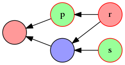

Consistency¶
One necessary property of a group session is that everyone sees the same transcript - that is, the same set of messages and their relative orders.
Everything we mention here will work under both synchronous and asynchronous transports. Though the specific values of certain time-based variables and distributions change depending on this, the strategies that we propose will adapt to any value, i.e. work regardless of the values.
Reliability and consistency¶
Consistency can be viewed as a case of metadata verification. Each message has an author, a context, and some recipients. We verify the author with message authentication, verify context with parent hash references and by checking their transitivity and ordering properties, and now we need a way to verify the (other) recipients, a.k.a. ensure consistency.
Consistency requires reliability. If some messages aren’t actually received by everyone, then of course we can’t possibly verify that they were. Or from another angle: if we don’t provide reliability, then consistency checks will emit so many false positive warnings due to unreliability, that the former becomes useless to the user as a security indicator.
Earlier proposals for consistency in group messaging protocols, have typically involved running a process at the end of a session, to ensure consistency for the whole session. This process is simple to reason about, but not explicitly robust against any lack of reliability, and does not provide useful information during the middle of a session.
We prefer an incremental model of consistency, where we continually verify the other recipients (i.e. consistency) of messages as we accept them, and also optionally provide reliability if we need to. Below, we describe our strategy for achieving this, using the causal order from the previous chapter, that has low communication overhead comparable to said earlier proposals.
We first observe that a message by itself (including metadata), fundamentally does not contain any information on whether its claimed recipients actually received it - since any author may author a valid message and simply not send them to some of the claimed recipients, perhaps with the co-operation of the transport. Therefore, verifying these recipients must be done strictly after we accept the message, i.e. after we verify the author via MAC or signature.
Further, if our transport breaks and we receive no more messages, consistency must not default to “OK”. That is, our mechanism must start at a “MAYBE-BAD” state, then warn the user if it does not turn into an “OK” state after some time. So we need a timer primitive; we cannot only run consistency checks as part of a packet receive-handler.
Before go further into consistency, let’s briefly remind ourselves of the core reliability strategy that TCP uses (of which there are many specialisations):
- each packet has a “sender-seqnum” that increments as more packets are sent
- each packet also contains an “acknowledged-seqnum”, to indicate that the sender has received, from its peer, all packets with that seqnum and lower.
- if a sender doesn’t receive an ack of a seqnum (or a higher one) after a while, it will resend that packet (and higher ones) to its peer.
It may be tempting to “just use” this transport-level reliability, but there are many reasons why we reject this, not only as insecure but also as inappropriate for a truly end-to-end system. Still, the general ideas are sound; our strategy draws from this, moves it up a few layers after cryptographic verification, and extends it to work for groups.
Acks and full-ack¶
In this section, we talk about our data structures and concepts. We interpret parent references as an implicit acknowledgements of the parent, and explore what this means for reliability and consistency.
When we see a message, we want to be sure that everyone else also saw it. Rather than trying to enumerate and detect all possible failures, we aim for a certainly-good state. Conveniently, we already have the mechanics for this in our causal order, namely the property that every message refers transitively to all its ancestors, via parent references.
We can be sure that r saw m, if we see a message am by r that refers to m, perhaps indirectly. We call this an acknowledgement, “ack” for short. This can be any message that refers to m, not necessarily a special ACK message; the references are what’s important here. Now, we have two cases to consider:
- We sent m:
- We assume that we ourselves sent the message consistently to everyone.
- We expect that all the recipients will ack the message, so that we know it was reliabily sent.
- Someone else sent m to us (and some others):
- We must ack the message ourselves, so that:
- the author knows it was reliably sent
- the other recipients know it was consistently sent.
- We expect that the other recipients will ack the message, so that we know it was consistently sent.
- We must ack the message ourselves, so that:
In both cases, once a message is acked by all its recipients, and we (i.e. from the view of a particular member) see these acks, we are sure that it has been sent both consistently and reliably. We call this state fully-acked, and afterwards we no longer need to worry about the message. Note that we don’t yet know that others have also reached “full-ack”, which is a harder problem. But this is OK, as argued in more depth later - we never actually need to know this.
In more precise terms: given a valid transcript T, we define that a message m is acked-by r iff ∃ m’ ∈ by(r): m < m’, and is fully-acked iff ∀ r ∈ recipients(m): m is acked-by r. [1] Note that m becomes fully-acked at the same position for everyone [2], namely just after T accepts all of its direct acks diracks(m) = { min(by(r) ∩ des(m)) | r ∈ recipients(m) }, des(m) being the descendant messages of m, and min(∅) = ⊥. Notice the similarity to context(m) - one may think of these as a “future” context(m). If and when full-ack is reached, this will contain no ⊥ values. [3] To visualise this:

Background colours indicate authorship, red borders indicate messages that are not yet fully-acked. If blue then sends a message referring to r, s, it will cause p to become fully-acked, and help r, s along on the way towards being so. This is an incremental consistency; full-acks occur as new messages arrive, instead of all at once at the end of the session.
| [1] | This definition becomes slightly more complex when we introduce partial visibility; see that chapter for details. |
| [2] | That is, position in the graph, not necessarily the real clock time, which we don’t deal with until later. One way to visualise this is as a “cut” in the graph just after diracks(m), that filters out later messages. |
| [3] | For space-efficiency, one should track unacked recipients instead of acked ones: when accepted, each message has a set unackby(m) that is equal to recipients(m), and it gradually becomes empty as later messages (that ack it) are accepted. When the set becomes empty, its ack-monitor is cancelled and a “fully-acked” event is emitted. |
Ack monitors¶
As mentioned before, we expect all messages to become fully-acked, so we need an active process outside of the send/recv logic to manage this and warn or try to recover if it takes too long. We call this an “ack-monitor”; we activate a new one for each message accepted, and de-activate it on full-ack. The basic behaviour is to warn the user if full-ack is not reached within a grace period and cancel/reduce this warning if it is reached afterwards, with some nuances and exceptions that we’re about to go into. Later on, we’ll use it to implement a primitive reliability mechanism as well.
For everyone to reach full-ack, each member must send an ack, for each message they received and did not send themself. But it is very wasteful for everyone to send an empty message simply to ack previous messages that have content; this would multiply the number of packets sent. So instead, we’ll come up with a more efficient strategy.
Define an explicit ack as a message whose only purpose is to acknowledge previous messages via its parent references, with no content or other semantics in the body of the message, and an implicit ack as a message with a body, that incidentally acknowledges previous ones. Explicit acks should not be displayed as a message in the UI, but it is still kept in the transcript graph, as a message object that differs from other message objects in its type and the fact that it has no body.
We observe that, in a typical session, a member will probably send a message after a certain period anyway, which is an implicit ack of previous messages. Then, we (as their local process) don’t need to send an explicit ack on behalf of them. So, in our system, we may set our full-ack warning timeout roughly to this expected time-to-reply, and just wait this out. Then, during a lull in the session when there are no replies after the timeout, or at its end when members commit to not sending any more messages, we may fall back to sending explicit acks automatically. This most naturally done within the ack-monitor, since that runs the timeouts.
Since explicit acks carry no other semantics, we don’t care if they are not fully-acked, so we don’t need to activate a new ack-monitor for it. That is, we don’t need to warn the user if it is not fully-acked after a timeout, nor to send a further automatic explicit ack to ack it. [4]
| [4] | If we did auto-explicit-ack an explicit ack, this would result in an indefinite sequence of mutual acks. This can help to achieve freshness but is not directly useful for consistency so we’ll skip it for now; in the next section we deal with freshness in more precise and quantifiable terms. |
Ack semantics¶
A normal message (that was manually sent) indicates “some” understanding of the content of previous messages. [5] On the other hand, an explict ack that was sent automatically should not be interpreted to carry the same weight, since the user has no control over whether they actually read its ancestors or not. If the application wishes to provide an explicit “user understood” ack, useful for timing-critical situations, they may add:
- a manual explicit ack, that must be initiated by the user - like acks in Pond, which are just empty messages.
- a pseudo-manual explicit ack, that may be interpreted like a manual explicit ack. This is triggered automatically, but only when the user is interacting with the application, or has it focused in the foreground.
These would be implemented as a separate message type, distinguishable from and not replacing our automatic explicit acks from the previous section.
Alternatively, the application may avoid adding any extra features, and just have the user manually send the string “ack” (or equivalent) in a normal message. Semantically this is an explicit ack, but the application would be unable to distinguish it from an implicit one.
Other projects’ terminology for these concepts include “delivery receipt” for “automatic ack” and “read receipt” for “manual/pseudo-manual ack”.
| [5] | The user could avoid reading the messages, but we can’t do anything about this, and it’s dubious that this could be abused for benefit. In the average case, there is some understanding. |
Timing concepts¶
We generally avoid require consideration of time periods, and prefer to reason about the relative ordering of events. However, as described previously, some parts of our design could not be achieved without this, namely grace periods and warning timeouts. Let’s attempt to define these more precisely now. There is a lot of depth here, and we won’t go all the way down the rabbit hole, but it is useful to sketch out a semi-formal framework for reasoning about these concepts, so that we can build an initial concrete software implementation that can be extended later without re-writing everything.
Here are some concepts that form a foundation for our later ideas:
BC_LAT:- Broadcast latency. This is the time taken for one packet to reach all of its recipients. In a 1-to-1 communication context, this is equivalent to half of the round trip time (RTT).
M_INTV:- Message interval. This is the time in between successive messages sent by a single member. In a real session, this would probably increase as the number of members increases.
FA_INTV:- Full-ack interval. This may be defined as
2 * BC_LAT + M_INTV, assuming that each member, if they don’t implicitly ack a message, will send an automatic explicit ack of it afterM_INTV.
The base concepts are random variables, that take different concrete values for
particular instances of a relevant event. For the purposes of our messaging
system, we are interested in picking a cut-off value s (which may depend on the
environment and not necessarily be constant) below which we deem an event to be
“innocent”, and above which we’ll treat as abnormal and maybe serious enough to
emit a user warning, such as “not fully-acked” for FA_INTV. When we refer
to an ALL_CAPS name, it will hopefully be clear from the context whether we
mean a single event, the distribution of events, or the cut-off value.
For each cut-off value s, a basic simple estimate would be to model the distribution P(t = s), where t is the r.v. on the time it takes for the event to happen, and pick s to be the 95% percentile value for t.
A more precise treatment would model the joint distribution P(R, T(s)), where R is a r.v. on whether reality is good (we are not under attack) and T(s) is a r.v. on whether our test passed (t < s) or failed (t > s), and choose s to maximise some information retrieval metric (e.g. precision, recall, f1-score) defined in terms of the distribution. However, we would need lots of data and complex ML inference techniques to do this properly, so we skip it for now.
Resends and duplicates¶
In this section, we talk about our algorithms and execution strategy. We look at a fundamental building block of reliability mechanisms, that is to actively resend messages, as well as how to react to duplicate messages.
Our basic reliability mechanism is to periodically resend the packet for a message m, until m is fully-acked. It seems most natural to implement this behaviour in the ack-monitor for m, since this detects the full-ack condition.
However, explicit acks do not have ack-monitors on them, so we must guarantee their reliability a different way. We’ll do this by having each ackmon resend not only its subject message m, but also chains of explicit acks sent directly before it, namely { p | p ∈ anc(m) ∧ EA(p) ∧ ∄ q: p < q < m ∧ ¬ EA(q)} where EA(x) is true if x is an explicit ack.
This still misses out explicit acks that have no implicit acks after them; we cover this last case indirectly by how we deal with duplicates.
Define a duplicate packet as one that verifies-decrypts to a message with the same metadata (author, parents, recipients) and data as an already accepted message. [6] Suppose we receive a duplicate packet d from sender s for a message m. This is because s hasn’t yet reached full-ack on m:
- If we authored m, there is nothing more we can do to help s reach full-ack.
- Else, someone else authored m, and we are:
- not meant to ack it (e.g. it’s an explict ack), so have nothing to do.
- meant to ack it, and have set an ackmon on it.
- If we haven’t yet acked it, the ackmon will ensure that we ack it.
- Else, we have acked it with message am, but s has not received this.
Then, they won’t ack am either. Either am is:
- meant to be acked, and we have set an ackmon on it. Then, it will detect that s hasn’t acked am, and resend it automatically. (Or s already acked am, and d was received due to a transport glitch or an attempted replay attack. In any case, we take no action here.)
- not meant to be acked, so we didn’t set an ackmon on it. But we have no other process to resend it, so we should resend it now.
The reliability scheme outlined above is quite implicit - we decide when to
resend packets using inference based on unmet expectations, and avoid explicit
“request resend” messages. More research is needed to optimise performance; in
practise, we are using an exponential backoff algorithm with base interval
BC_LAT, but first wait for FA_INTV before starting the iterations, with
an extra throttle to reduce multiple members from resending the same packet
many times in quick succession. This has worked adequately, and our underlying
scheme has a clear logical justification, so we’ll continue with other topics.
| [6] | Duplicates of non-accepted queued messages may be ignored - we don’t even know if it’s a valid message yet, and if/when we do, the rules for duplicate accepted messages will handle that. |
Single-ciphertext principle¶
To simplify resends, we suggest to follow the “single-ciphertext principle” - each message is communicated as the same ciphertext for everyone, and this applies even if parts of it are encrypted to only a subset of the recipients. This makes it easy to detect duplicate resent messages, and also enables each member to resend messages authored by someone else.
For each message m, all members cache its ciphertext c in case they need to resend it to others, even if they didn’t author it themselves. After m is fully-acked, c need never be resent again. However, implementations may still wish to store it for a while (at most, until when diracks(m) are themselves all fully-acked), so that they can recognise c if it is resent by others, and handle it as according to our de-duplication scheme.
Caching ciphertext should not affect security (e.g. forward secrecy) of the message, since the threat model already includes an eavesdropper that permanently stores all ciphertext.
If an entity - e.g. an XMPP server - can observe multiple recipients receiving the same ciphertext, then this links these recipients. Hiding this metadata is outside of the scope of this chapter, and adhering to the single-ciphertext principle makes this leak no worse than existing systems, but newer systems that try to explicitly provide unlinkability will need to think about this.
Transcript consistency¶
For any given message, we have a mechanism to reach consistency for it and its ancestors. To achieve “transcript consistency” then, we just need to define clearly what the “transcript” is, then apply this mechanism. This reduces down to defining what the final messages (i.e. maximum in the causal order) are, which fully determines the rest of the transcript.
We begin as usual, by taking inspiration from our old friend TCP. We abstract its concrete mechanism, then translate this to the group messaging context. The TCP close process is actually two separate processes, that each close one half of the full-duplex (send, recv) stream pair:
| TCP | Pair session (abstract) | Group session (abstract) |
|---|---|---|
| send FIN | I have no more to send | (same) |
| recv ACK | Peer got all that I sent | Everyone got all that I sent |
| recv FIN | Peer has no more to send | Everyone has no more to send me |
| send ACK | I got all that peer sent | I got all that everyone sent to me |
We’ll use these concepts as a base from which to explore and develop concrete proposals for defining the “end” of a session. They also form a common ground to help explain our proposals to others. The first naive idea that arises is to define the session transcript as the union of the ancestors of everyone’s FIN messages. To reach consistency, we wait for all of these to become fully-acked. However, this only works well if everyone wants to leave the session together.
To define a double-half-close process in a group session requires more precise treatment of how this interacts with membership changes. Intuitively, when the receive side closes (i.e. “everyone has no more to send me”) is exactly when I am excluded from the session, but what does the send side correspond to? We’ll explore this later in partial visibility; for now we skip this to propose a single-full-close process as an intermediate feature.
The process is as follows: when we want to part, we send a both-FIN message
zm, that means “I have no more to send, and I will accept no more from anyone”.
Then, we wait for explicit acks to it. Once it is fully-acked, we reach
consistency for all of anc(zm), which we’ll define as the session transcript.
Recipients should ack these quickly e.g. within some small ratio of BC_LAT,
instead of waiting the usual grace period before sending a normal automatic
explicit ack. On the other hand, since there won’t be any future chance to
receive the acks, they may use a longer-than-usual “not-fully-acked” timeout.
If we receive user messages not in anc(zm), we must ignore them or display/log them permanently with a warning, because we have no chance to verify their consistency - and we committed to not accepting them anyway when we sent zm.
If we fail to reach full-ack for zm (i.e. time out waiting for this), then we still have consistency for all the messages we had previously reached full-ack for, which hopefully is almost equal to anc(zm). For all other messages, we should display/log them permanently with a warning.
Even if we reach full-ack for zm, this process does not guarantee that others know that we have reached this good state. Likewise, TCP has no guaranteed confirmation that a peer received our ACK to their FIN. We don’t believe this to be a security problem, however.
We have not yet suggested what the remaining members should do to continue the session without us. This will be explored later, together along with the other issues on membership changes mentioned above.
Future extensions¶
TODO: better wording here
Use ML to tweak flow control, just like we have various complex TCP flow control algorithms. Probably not necessary for “text messaging” low-bandwidth applications.
Selective acks as in TCP. (“extra-mIds seen” on top of parents?)
Rejected ideas¶
Transport-level reliability¶
Commonly, cryptographic protocols ignore reliability, and assume it will be covered by a lower layer. The prevalence and relative success of TCP today probably encourages this. However, this is not always the best thing to do if one wants true end-to-end security properties, and we reject this for our group messaging scenario.
Sometimes there is confusion on what “reliability” actually means. Let’s clear this up now. Reliability is not about preventing drop (or denial of service) attacks; we assume that an attacker can always just drop everything if they want to. Protection from the external consequences of a drop attack is outside of our immediate scope, though we may return to it later. [7]
Instead, reliability is about trying to recover from ordinary non-malicious transport failures. As mentioned earlier, these failures will eventually cause a failure of consistency checks, so it is “secure” to forego reliability in the sense that a bad condition will never be presented as a good one. But compared to true positives (i.e. failures due to actual attacks), innocent transport failures are very common, so not minimising false positives would expose us to the base rate fallacy. Another way of putting this is that a warning which 95% likely to be a false positive is useless security information, and a very bad user experience that may incentivise them towards less secure applications.
Reliability is independent from asynchronity. Asynchronity is the ability of a transport system to deliver a packet to all recipients even if some are not available (online) when the sender sends it. It is perfectly possible and desireable to build a communications system to be reliable and asynchronous. [8] In fact, the problems with transport layer reliability that we will mention, become more apparent and severe in an asynchronous setting; this reinforces our argument that reliability is best achieved in the messaging layer, after end-to-end verification.
When talking about security or liveness properties, it is important to specify the subject and context of these properties. For example, the term “end-to-end encryption” was coined as a response to distinguish it from applications that make a big deal out that they “use encryption”, but this turns out only to be in the transport layer between devices, and do not provide properties that are actually relevant to users, i.e. user-to-user confidentiality. Likewise, transport layer reliability is not directly relevant to messaging users, whom would rather have user-to-user reliability.
We continue our argument with a recap of internet architecture. The internet is a global device-to-device communications system (“transport layer”) that enables pairs of devices (each with an IP address) to talk to each other, even if they are not directly connected via physical links. In this context, the ends are a pair of devices in this network, and each communication unit (IP packet) has a from and a to address that identifies these. The middle or core of the network are devices such as routers and switches, whose purpose is to forward others’ packets correctly rather than sending their own packets.
Similarly, in the context of user-to-user communications systems (“application layer”), the ends (i.e. user devices) typically do not communicate directly using the IP protocol. Instead, communication is routed over several non-user IP devices, such as web, email, or chat servers. This can be viewed as an application-level virtual overlay network on top of the internet, whose middle nodes are end nodes in the context of the internet.
On the internet, the core attempts to provide a service (packet delivery), and the edges verify and attempt to enforce that this was provided (reliability). [9] There are many good reasons for this separation of concerns in the network architecture. These include network resilience against attacks, edge robustness against different network failure modes, and resource and complexity constraints of the core to help network scalability. Our insight is that these reasons also hold in the group messaging context (a user-to-user communications system), and that user-to-user reliability is best achieved on the edges (ends) of its overlay network. To expand on some of these:
Failure modes. With transports that run via a third party, the transport layer cannot detect certain end-to-end reliability failures, even if these parties are honest. For example, even if a sender’s TCP subsystem delivers a packet reliably to the chat server (“first hop” in the application overlay network), it does not attempt this to the other recipients (the subsequent hops). The server’s own TCP subsystem may attempt this, but we (the sender) have no way to find out whether it succeeds, nor verify this. The recipients may even be offline, in which case reliable delivery (at least over TCP) is impossible, even if they were online at the time of the original send.
Resource constraints. Some servers try to mitigate the above failure modes, by resending packets to those offline clients when they come back online. [10] But in all cases, the scope of this reliability is limited: by time, by packet-count, or by some other resource. This is an inherent limitation of public servers: they cannot offer unconditional user-to-user reliability since this requires unconditional buffering of unacked packets - but that may be abused by malicious clients resulting in denial of service. Even if they did provide this, the clients still need a way to verify it. By contrast, user clients have the incentive to indefinitely buffer their own not-fully-acked messages, and the ability to verify the success of their delivery.
Authentication. Reliability that works on a lower layer are not end-to-end authenticated, and therefore may be forged. For example, in a MUC chat server scenario that forces TLS, we achieve reliability and authentication in the transport (the internet), but not on the application layer (between the chat users) - the server can easily forge ACKs from each member to everyone else. We only achieve the latter if reliability occurs after end-to-end verification.
Correctness. ACK failures necessarily can only happen after delivery, but TCP doesn’t notify higher layers about these. If the recipient drops their connection right after you pass your payload to your TCP subsystem, they will never ack this to you, so in general we won’t know if the peer received our packet. TCP assumes that the higher layer will detect it (e.g. when a reply is missed), or that it’s not important. However, this assumption is not safe in general, and for group messaging the higher layer is human users who are generally unreliable at automatically noticing implicit semantic details. So we choose to pass these notifications explicitly.
To be clear, we do not suggest that transport reliability schemes should not be used. Everyone already has TCP for free, and it recovers from very common transport failures. Rather, we argue that it is vital to have a “last guard” mechanism on the application layer, that provides better guarantees and lower false positive rates, whether or not we have transport reliability.
| [7] | For an example of an “external consequence”: dropping the first message of a session may cause future sessions to re-use the same long term key in the next session. This may reduce or eliminate the forward secrecy of the first message, which may be a problem if this first message was supposed to be the second message of the disrupted session. One protection is to use a lossy ratchet such as Axolotl (i.e. that doesn’t guarantee reliability nor ordering) to derive session keys, and use these instead of long term keys, but still generate message keys (of the same session) using a strongly ordered ratchet that does not tolerate losses. Other external consequences will need to be dealt with in their own specific way. |
| [8] | Email is asynchronous and somewhat reliable (has limited resending) but it has a lot of unnecessary complexity and historical baggage, and is generally considered unsuitable to build clean applications on top of. |
| [9] | One often hears this described as “dumb core” and “smart edges”. To be clear, routing and reliability can both get very complex - rather, the contrasting adjectives refer to the fact that complex applications are typically built on edge devices, and less commonly so core devices. |
| [10] | In XMPP, several mechanisms exist that approximate this: session resumption for short disconnects, and discussion history as ad-hoc opportunistic context on joining a channel. |
Consistency vs consensus¶
In our usage, consistency is not consensus. Consensus is about agreeing on a future value or action, that has not been decided yet; consistency is about agreeing on past history, that has already happened. So we don’t need to use Byzantine fault tolerance techniques (which have probabilistic success), and can achieve a stronger guarantee with simpler techniques.
With consistency, we only achieve “first-order” knowledge - that is, for each message m, from the view of a member u, u knows (P: everyone has seen m), but u doesn’t know if (Q: others know P), nor (R: they know u knows P), etc. For comparison, consensus requires us to achieve common knowledge (i.e. “infinite-order” knowledge).
We don’t foresee any situation where we need those latter properties, and we believe that their absence is not a security problem. It is the responsibility of each user to check that all messages they see are fully-acked. For a message m that we acked with am, even though we don’t explicitly check if the recipient actually received am, we know at least that if the transport drops am, they would not treat m as fully-acked, i.e. a maybe-unsafe situation would not be presented as safe. Further, the way that we handle resent duplicate packets gives some extra confidence in this particular scenario - similar to how TCP’s TIME_WAIT state handles FIN resent by the peer, when the ACK to it is dropped.
A related concept that does provide a guarantee for explicit acks, is heartbeats. These can be thought of as automatic explicit acks that result in an infinite sequence of mutual acks. But their purpose is to ensure freshness rather than consistency, and their cost may be unsuitable for some asynchronous protocols. So we omit them here, and talk about them separately as an optional feature.